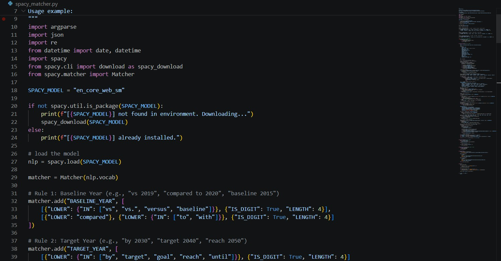
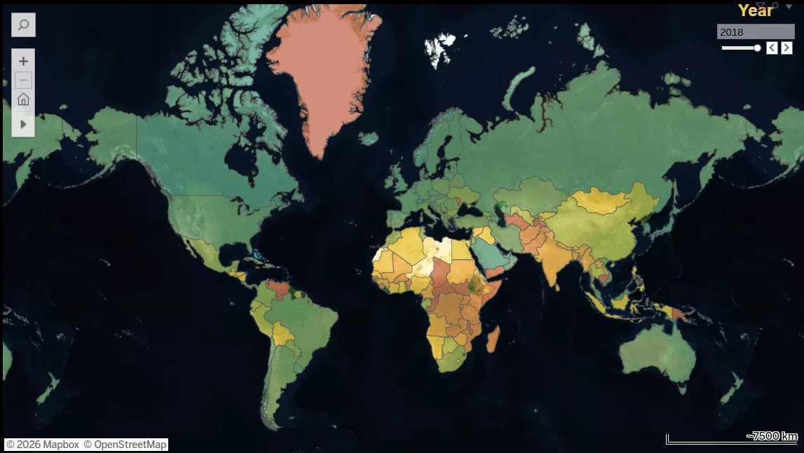
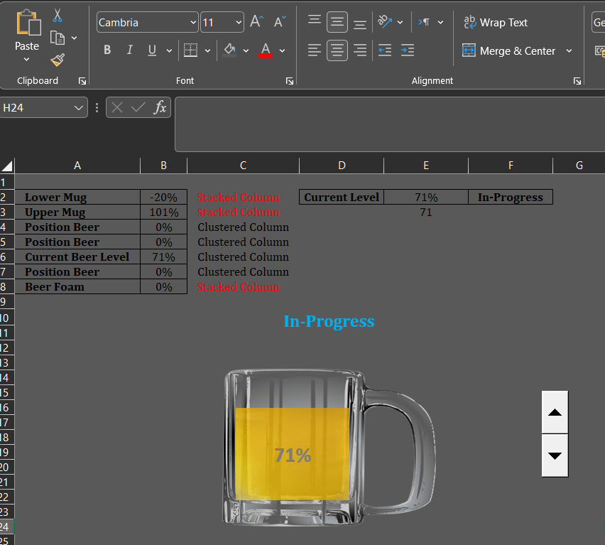

Sales Manager
Matin Real Estate
Data Scientist · Applied ML · NLP · Generative AI
I am a commercial data scientist with experience spanning sales, ERP implementation, business analytics and machine-learning pipelines. I combine an MSc in Data Science with a systems-optimisation background to solve complex data and business-performance challenges.
Career path
Five roles spanning commercial leadership, analytics, enterprise systems and applied data science.
Matin Real Estate
POOYESH GHODRAT
Banian Tolid
System Group
TiiQu
Capabilities
A focused view of the tools and disciplines I use across analytics, machine learning and data systems.
Current work
My current initiatives focus on production-grade semantic NLP pipelines within regulatory compliance frameworks. I transform unstructured legislative text into deterministic semantic units and vector embeddings for traceable analytics and claim-verification workflows.
Academic foundation
My technical foundation combines an MSc in Data Science from Aston University, awarded with Distinction, with postgraduate study in Industrial Engineering and System Optimisation at the University of Tehran.
Selected work
Data engineering, machine learning and business-intelligence projects built across corporate and research environments.

Predictive modelling, automation scripts and custom analytical pipelines.
Explore repositories
Data preparation, database normalisation and complex multi-table workflows.
View queries
Operational dashboards that make business performance visible in real time.
Examine dashboards
Interactive dashboards and analytical stories across varied datasets.
View public profile
Analytical models, metric visualisation and database-driven reporting.
Review workbooksLet’s connect
Connect with me to discuss analytics, machine learning, NLP or production data pipelines.